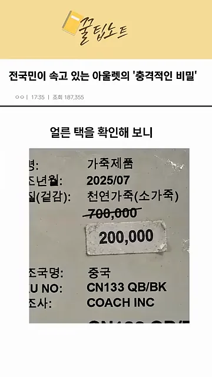
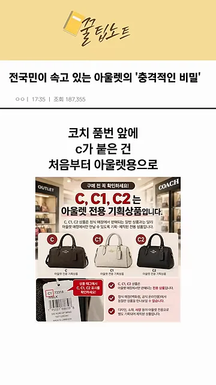
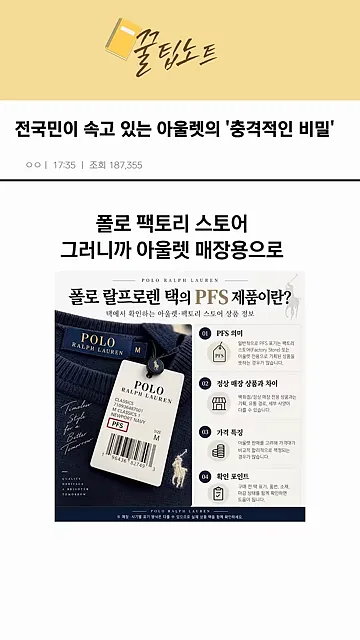
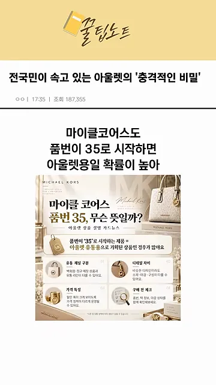
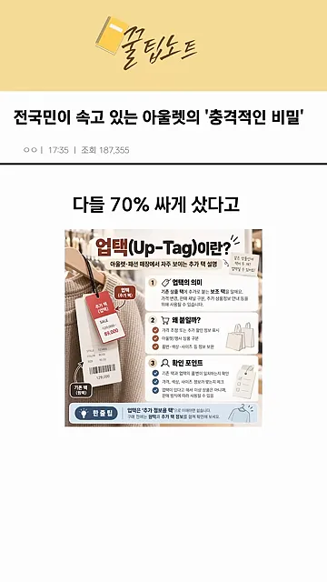
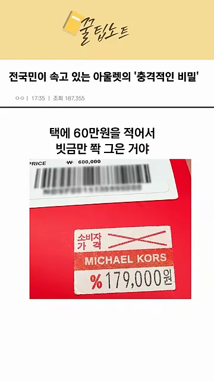
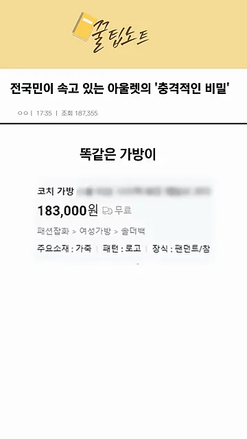

백화점 물건이 아닌 아울렛 상품
영상은 짧은 상황극이에요. 주인공이 여자친구 생일 선물을 사러 프리미엄 아울렛의 코치 매장에 갔다가, 70% 할인 표시가 붙은 가방을 골라요. 그런데 아울렛에서 아르바이트를 해 본 친구가 택을 뒤집어 보더니 사지 말라고 해요. 백화점에 걸린 적도 없는 가방이라는 거예요.
아래 택이 주인공이 본 가격표예요. 위에 700,000에 빗금이 그어져 있고, 그 아래 200,000이 따로 붙어 있어요. 제조사 칸에는 'COACH INC'가 적혀 있어요.

아울렛 상품은 두 종류예요
주인공은 아울렛을 '백화점에서 팔던 걸 싸게 파는 곳'으로 알고 있었어요. 그런 물건이 이월 상품이에요. 친구 말로는 아울렛에는 처음부터 아울렛에서 팔려고 만든 기획상품도 섞여 있어요. 겉보기엔 같은 브랜드 가방이라 매장에서 바로 구분하기 어려워요.
택에서 확인하는 법
친구가 알려 준 구분법은 택의 품번이나 표기를 보는 거예요. 화면에 나온 코치 안내문은 품번이 C, C1, C2로 시작하는 가방 세 개를 나란히 놓고, 모두 아울렛 전용 기획상품이라고 적어 뒀어요. 왼쪽 아래 택 사진에도 C1로 시작하는 품번에 표시가 돼 있어요.

폴로 랄프로렌은 품번 대신 택에 찍힌 PFS를 봐요. 아래 화면에서 가운데 흰 택의 빨간 네모 안에 PFS가 보여요. 폴로 팩토리 스토어, 곧 아울렛 매장용으로 나온 옷이라는 뜻이에요.

마이클 코어스는 품번이 35로 시작하는지 봐요. 아래 안내문 가운데 칸에 '품번이 35로 시작하는 제품은 아울렛 유통용으로 기획된 상품인 경우가 많아요'라고 적혀 있어요. 친구는 공식몰 아울렛 코너의 가방들도 35로 시작한다는 걸 근거로 들어요.

| 브랜드 | 택에서 볼 곳 | 영상이 말하는 뜻 |
|---|---|---|
| 코치 | 품번 앞의 C (C, C1, C2) | 처음부터 아울렛용으로 만든 상품 |
| 폴로 랄프로렌 | 택의 PFS 표기 | 폴로 팩토리 스토어(아울렛 매장)용 |
| 마이클 코어스 | 35로 시작하는 품번 | 아울렛용일 가능성이 높음 |
70% 할인의 정체, 업택
영상이 더 문제 삼는 건 가격표예요. 주인공이 '그럼 70% 할인은 뭐냐'고 묻자, 친구는 처음부터 20만 원짜리로 만들어 놓고 택에 더 높은 정가를 적은 뒤 빗금만 그었다고 답해요. 이렇게 할인 폭을 크게 보이게 하는 택을 업택이라고 불러요.
아래 화면은 업택을 설명하는 안내문이에요. 왼쪽 옷에 원래 택 위로 빨간 택이 하나 더 달려 있어요. 오른쪽에는 업택의 의미, 왜 붙일까, 확인 포인트 세 칸이 있어요.

업택을 설명하는 대목에선 마이클 코어스 택도 함께 보여 줘요. 위쪽 'PRICE' 칸에 600,000이 찍혀 있고, 빨간 스티커의 소비자가격 칸에는 엑스 표시가 그어져 있어요. 그 아래 할인가는 179,000원이에요.

숫자 하나는 영상 안에서도 엇갈려요. 처음엔 택의 정상가를 70만 원이라고 했고, 00:24 화면의 코치 택도 700,000이에요. 업택을 설명할 때는 '60만 원을 적어서'라고 말해요. 어느 쪽이든 핵심은 같아요. 할인 기준이 된 정가가 실제로 그 값에 팔린 적 없는 숫자일 수 있다는 거예요.
빗금 대신 인터넷 최저가
영상의 결론은 간단해요. 아울렛에서는 빗금 친 가격을 믿지 말고, 인터넷 최저가부터 확인하라는 거예요. 주인공이 품번을 검색해 보니 같은 코치 가방이 인터넷에서 183,000원이었어요.

세 가격을 같은 눈금으로 놓으면 이래요. 70% 할인이라는 말은 맨 위 막대를 기준으로 한 계산이에요. 그런데 그 막대가 실제로 팔린 적 없는 숫자라면, 할인은 말뿐이에요.
이야기는 주인공이 그 가방을 내려놓고 진짜 이월 상품을 다시 고르는 것으로 끝나요. 여자친구는 백화점에서 보던 가방이라며 좋아했다고 해요.